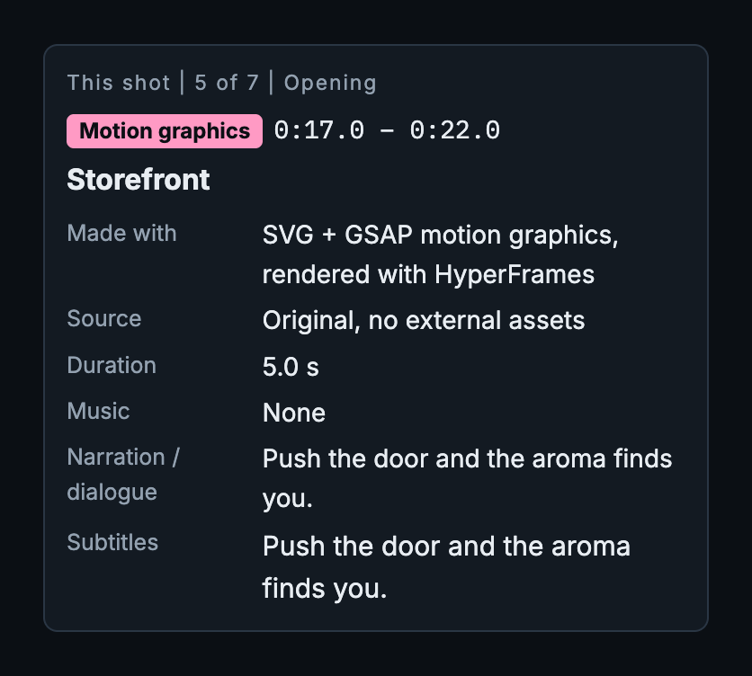
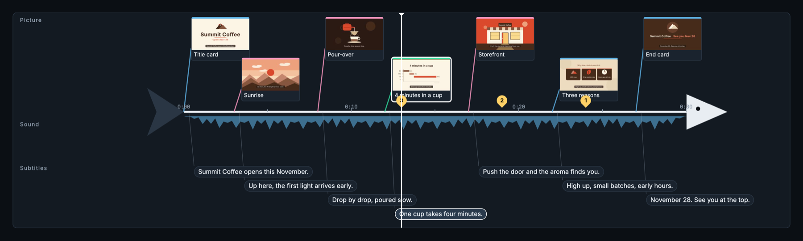

Every shot, laid out
The shot timeline shows the whole film as a row of thumbnails. Stop on any shot and it tells you how long it is, how it was made and where the asset came from.


← Swipe sideways to see the whole timeline →